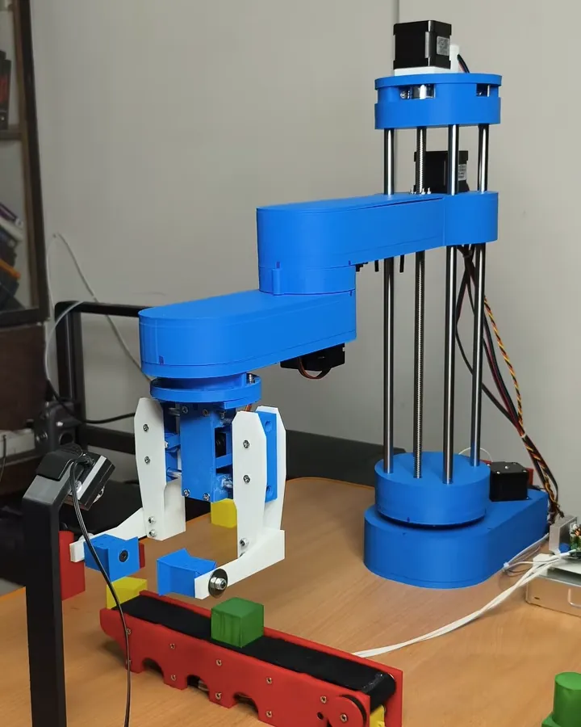
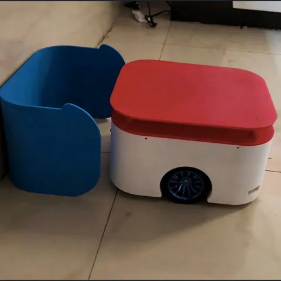
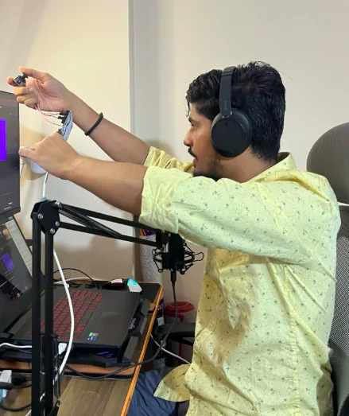
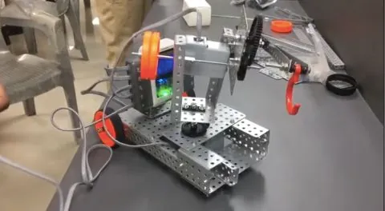
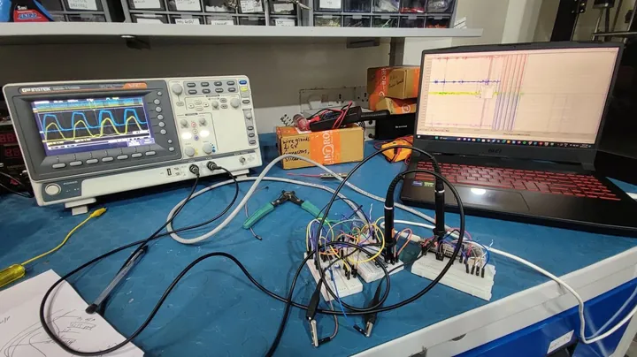
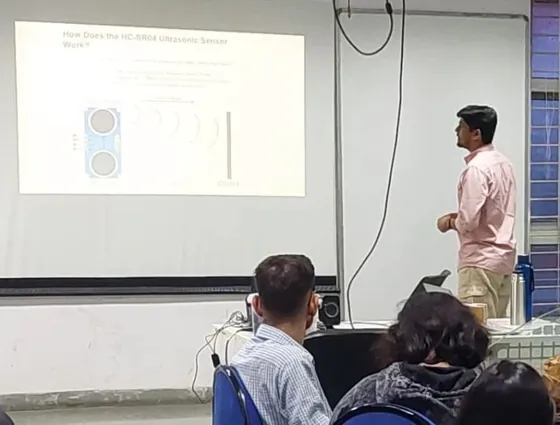
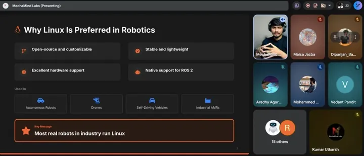

SCARA conveyor pick-and-place
A 4-DOF SCARA arm that watches a conveyor, finds boxes of a chosen colour with a camera and picks them, with a Gazebo digital twin running alongside. Built and documented in 25 parts.
Electronics first, then embedded systems, then ROS 2 on top of the hardware. I worked at IIT Bombay on embedded and industrial IoT systems, and I founded MechaMind Labs, where I teach robotics by building complete robots. Next, I want the foundations underneath the tools: a master's in robotics for Fall 2027.



I'm a hands-on robotics builder. I like owning the whole robot: CAD, electronics, firmware, ROS 2, perception, navigation, and then the stubborn part where it has to work on real hardware. I teach the same way I build.
A gradual path, not a jump: electronics, then embedded systems and IoT, then ROS 2, mobile robots, manipulation and real hardware. Teaching grew out of the learning.

I tightened tiny screws with shaky hands and wired motors without really knowing why they worked. I didn't know the words robotics or embedded systems yet, but I knew this was what I wanted to keep building.
Line followers, a teach-and-repeat servo arm, a metal detector, Li-Fi audio, a 2D CNC plotter. Small projects, but I finished them and posted them on YouTube while I was still in school.
In my first year of college, Robocon gave me a brief early exposure to competition robotics. A minor part of the story, but a real one.
College projects that solved small, real problems: an RFID canteen payment system for a canteen with no mobile signal (team of two), VisiLogic, a visitor counter built from logic ICs with no microcontroller, a pill dispenser and a sewer inspection robot.
e-Yantra, IIT Bombay's robotics competition, is where I first went deep into ROS 2. I came in as a beginner, and I failed. It was also where I understood that IoT is not robotics: a robot is sensing, computation, planning and actuation working as one system. ROS was how I was first exposed to robotics, and one part of my learning path, but robotics is much broader than ROS.
That failure is what pushed me to learn ROS 2 properly, and later it is what moved me toward teaching it.
e-Yantra showed me the gap between basic exposure and real understanding, so I went back to the start: structured ROS 2 courses, each followed straight away by a robot of my own. First ROS 2 project in August 2024; my first physical ROS 2 robot, a differential-drive base, was finished in October.
In the order I finished them. Each title opens its Udemy completion certificate.
In my final semester I joined NCAIR at IIT Bombay as a research intern and stayed on as a full-time research assistant. It was embedded and industrial IoT work, not robotics, but it gave me real-time firmware depth and taught me to work inside a team.
When I was learning, good robotics material was scattered across courses, videos and documentation, and very little of it ended with a working robot. I started MechaMind Labs to put it in one place, in an order that ends with a real robot. First live workshop: 12 July 2025.
For a year I ran both: the research job by day, then cohorts, content and builds in the evenings and at night. What kept me going was the traction, the comments from people who were building along with me, and wanting the work to have a positive impact.
MechaMind Labs was gaining traction and doing both well had become difficult, so I left IIT Bombay to work on it full time. I handed over my four research projects with full documentation.
A SCARA pick-and-place cell with a digital twin, documented in 25 parts from the first plan to the final autonomous demo.
I've gone about as far as courses, documentation and my own builds can take me. Next is a master's in robotics.
No single person changed my trajectory. I usually changed it myself, through my own decisions.Kumar Utkarsh
Newest first. Each one says plainly whether it runs on real hardware or in simulation, and links to the code and the video.
A 4-DOF SCARA arm that watches a conveyor, finds boxes of a chosen colour with a camera and picks them, with a Gazebo digital twin running alongside. Built and documented in 25 parts.
A differential-drive robot that maps a room, patrols, watches its battery and drives back to its charging dock by itself, using a QR marker and LiDAR to dock. The robot learners build in AMR Mastery.
SLAM, Nav2, vision docking and voice commands on a real base with a torso on linear rails. The arms were planned, not built. Most of what I know about encoders, odometry and costmaps came from fixing it.
Franka Panda colour sorting, two Pandas playing tic-tac-toe against people and each other, a mobile manipulator, and UR5 pick-and-place of ArUco-marked boxes from the e-Yantra competition.
Joystick and keyboard control of a PX4 drone in software-in-the-loop simulation through ROS 2 and Micro XRCE-DDS, with path visualisation in RViz.
A 3D-printed arm read by potentiometers on an ESP32, mirrored live in RViz and Gazebo. Built in three days for a live masterclass.
An ESP32 and MPU6050 running micro-ROS, filtered with moving-average and Madgwick filters, steering a simulated robot by hand gestures.
Docks with ArUco markers when the battery runs low, re-routes around obstacles, and falls back to a second dock if the first is unavailable.
A differential-drive base with a custom ros2_control interface, a hand-written Kalman filter and OpenCV line following, on the bench and in Gazebo. Built from Antonio Brandi's "Learn by Doing!" ROS 2 course and extended with a camera and line following, it was my first physical ROS 2 robot; Antonio Brandi later featured my extended Bumperbot in his newer navigation and localization course.
These weren't ROS-centric robotics projects. They were my early hardware and firmware foundation.
The college canteen had almost no mobile signal, so payments failed and queues formed. A card recharge station (UPI over a GSM module) and an ordering kiosk that deducts from an encrypted ID card and prints the bill.
Digital electronics only, no microcontroller: counter and divider ICs, a crystal oscillator, my own op-amp comparator and IR sensor, seven-segment displays and relays.
An ESP32 machine with six cylinders on a stepper that dispenses by selected symptom or on a schedule, with a TFT interface and 3D-printed parts.
A gas-sensing pipe robot with a live camera, an Arduino-flown F450 on open-source YMFC-AL firmware, and a 433 MHz RF-controlled mecanum base.
Detects a currency note, identifies its denomination, sorts it inside and shows the running total, on a Raspberry Pi and an ESP32 with stepper motors.
Feb 2025 – Jul 2026, NCAIR's Machine Intelligence Program. Not robotics research, but the real-time firmware and sensing depth my robots stand on.
I joined as a research intern in my final semester and stayed on as a full-time research assistant from August 2025 to July 2026. The work was high-rate sensing, real-time firmware and telemetry for industry-linked projects, and turning research ideas into hardware and software prototypes.
When I left, I handed over all four projects with full documentation, including every known gap. Code for three of them is public.

An IIS3DWB accelerometer and an MPU9250 gyroscope sampled at 25 kHz and streamed as binary frames without dropped samples. I built and compared four system designs, including a hardware ready/clear-to-send handshake between nodes.
The sensing and telemetry layer: seven sensors read concurrently by eight FreeRTOS tasks, a 0–100 machine health score, and a live dashboard. Below its design sample rates, and not deployed. No public code.
A captive-portal recorder that needs no router or app, and a second firmware version written after a careful post-mortem of two bugs in the first.
A body-worn sensor node streaming IMU, ECG, load-cell and SpO2 data across four hops to a live browser dashboard.
I teach the way I build: start with the problem, get a first version working, then improve it. Everything is recorded and the code is open.
In engineering I can live with trade-offs, and I say so when I make them. In teaching I don't compromise: if I know something, I teach it end to end.


| Date | Session | Recording and code |
|---|---|---|
| 12 Jul 2025 | Mastering ROS 2: build an edge-avoiding robot from scratch | VideoCode29-step guide |
| 26 Jul 2025 | ROS 2 basics with Turtlesim | Code |
| 2 Aug 2025 | ROS 2 hardware integration: an Arduino joystick over serial | VideoCode |
| 27–28 Aug 2025 | ROS 2: the complete beginner's course (two-day bootcamp) | Part 1Part 2 |
| 6 Sep 2025 | ROS 2 and micro-ROS: a gesture-controlled robot | VideoCode |
| 5 Oct 2025 | ROS 2 pick and place: OpenCV colour sorting with a Franka Panda | VideoCode |
| 23 Nov 2025 | PX4 and ROS 2: drone teleoperation in Gazebo | VideoCode |
| 10 Jan 2026 | ROS 2 digital twin masterclass: a 3-DOF arm, simulation and hardware | VideoCode |
Dates are when the recordings were published. The bootcamp was a paid, limited-seat session; every recording is free on YouTube. Also: a ROS 2 URDF tutorial (May 2026), a cohort class released free. All recordings: Workshops and Live Labs.
A 45-day live program in which learners build a self-docking autonomous mobile robot, MechaBot, from Linux basics to real hardware. Live classes ran one hour every evening, with recordings the same day.
Cohort 1 started 26 Jan 2026 and cohort 2 on 20 Apr 2026. A self-paced version followed in July 2026. I designed MechaBot for the program, so every part of it had to be explainable.
Project stages: robot CAD → visualisation → joystick teleoperation → autonomous maze solver → SLAM mapping → autonomous navigation → autonomous docking → hardware deployment.
Taught on behalf of IIT Bombay with my colleagues Karan Jaiswal and Raj Rana, from sensors to working prototypes.
A free WhatsApp community I run for ROS 2 learners, split into software, core and hardware groups, where I answer questions alongside the workshops.
Viewers reproduced the Franka project on their own arms and in Isaac Sim, a learner sent a pull request, and I answer setup issues on the repos myself.
"Pick a robot, then learn only what it demands." My roadmap for beginners on the MechaMind Labs blog.
Their results, in their own posts. Where my program or videos were one of several things that helped, I say so.
"Special thanks to KUMAR UTKARSH for building a course that teaches you how to think in robotics not just follow instructions."
"A special thank you to KUMAR UTKARSH and the AMR Mastery Workshop. The workshop provided an excellent foundation in autonomous mobile robotics"
Her post credits her mentors at the UNILAG Design Studio, Aurora Robotics, and the MechaMind Labs YouTube channel among the resources that introduced her to ROS 2 and Gazebo. The internship is her achievement.
The award belongs to his team. He came through AMR Mastery, and the project builds on the robot we made in the program.
"A special shoutout to KUMAR UTKARSH for his insightful YouTube tutorials"
"Learned this from MechaMind Labs honestly a very clear tutorial."
"structured guidance and mentorship"
"I learned all of this from the Autonomous Mobile Robots (AMR) Mastery Course"
"Shout out to KUMAR UTKARSH for the detailed workshop that guided me through it!"
"A well-structured, hands-on program that made it possible to build a complete ROS2 autonomous mobile robot—from simulation to real hardware."
"Special thanks to KUMAR UTKARSH to provide this valuable video"
"KUMAR UTKARSH Reels for additional inspiration"
Nine learners' project videos, collected on the MechaMind Labs website. Press play to watch here.
A mentor's recommendation, faculty who took the course, learners on video and in writing, and viewers on YouTube. Each with its source.
"What stands out about Utkarsh is his 'Full Stack' approach. He doesn't just understand the theory; he bridges the gap between Embedded Hardware and high-level ROS2 intelligence to build systems that actually work. Beyond his technical skills, he has a rare ability to break down complex engineering concepts into actionable steps for others."
"Being a Professor myself, I am truly astonished by the way you conducted the sessions online. We were completely engaged and genuinely looked forward to every class — that itself speaks volumes about your teaching. … At 42, it was sometimes difficult for me to keep up with the pace daily, but your LMS made it possible to learn comfortably at my own speed. … I will certainly recommend you to all my Mechanical Engineering students."
"I strongly recommend everyone to join this course who really want to work something in Robotics."
"Excellent sessions on ROS, URDF, and Gazebo."
"I learned the concepts and practical handson skill on autonomous mobile robot using ROS2"
Videos load only when you press play. See them on the MechaMind Labs testimonials page ↗
"One of the best live online robotics courses I've found, especially for the price. … I went in with no ROS2 knowledge and came out writing my own nodes in Python, working with the Linux terminal, building URDF files, and exploring OpenCV and Nav2. The live format made it easy to get doubts resolved on the spot, and the hands-on hardware sessions were especially valuable."
"If you are tired of standard courses that just ask you to check boxes, the AMR Mastery Program is a breath of fresh air. It focuses on building a modular, functional ROS 2 AMR from the ground up, covering everything from core fundamentals in simulation to actual physical deployment. In 45 days, it turns curiosity into genuine engineering capability."
"The explanations are really clear. It's not just about how to do ROS programming, but also understanding what ROS actually is and how the ROS CLI works. That makes it much easier to debug, understand, and write complete programs."
"It's a complete project-based experience. Even though I already had some background in electronics and mechanical concepts and joined mainly for the software side, it really helps — especially for beginners — to see the entire pipeline end to end. … At the end of the day, doing is more important than just learning — and that's exactly what this program focuses on."
"Interactive robotics makes learning feel easy and natural. Most of us learn best while doing projects and discussing things with friends, and that's exactly how this feels. The way Utkarsh teaches, it doesn't feel like a typical class — it feels more like a group session where everyone is learning together."
"This felt less like a course and more like the best hands-on experience I've had. With the skills and resources I gained, I'm now confident I can build a full-stack system — from designing to coding to deployment."
"This program helped me move from basic theoretical understanding to actually building and debugging a full autonomous robot system. I'm now confident working with ROS2, simulation environments, and navigation stacks."
"In these 45 days, I gained complete knowledge of building an autonomous mobile robot from scratch — not just in simulation, but on real hardware as well. This course is absolutely worth it."
"I found the sessions on URDF, creating ROS nodes, and using RViz extremely helpful and easy to follow. As a beginner, this program gave me the confidence and hope that I can actually build an autonomous robot on my own — starting from simulation all the way to real hardware."
"It was a wonderful experience. Even when I couldn't attend live sessions, the recorded videos were extremely useful. I learned both practical shortcuts and deeper concepts that made things much easier."
"It was good to be able to learn the whole system from the ground up. The course provides a strong foundation for building and testing real robotic prototypes."
"I found the course helpful in understanding common errors and challenges faced while building robotic systems. It gave me a clearer perspective on developing simulation-based systems."
"The program gave me the confidence to build a complete ROS2 robot and take it beyond the classroom. That journey eventually led to winning 2nd place in a national engineering competition."
"Excellent learning experience, and thank you so much for this wonderful course, Kumar Utkarsh. It was great to explore advanced concepts, and I'm looking forward to more such programs in the future. I strongly recommend this course to anyone who genuinely wants to build something in robotics."
"Being a Professor myself, I am truly astonished by the way you conducted the sessions online. … The resources you provided are extremely valuable and well-structured. I did not join with the intention of mastering AMRs, but rather to take my first step into the world of robotics — and this program gave me exactly that confidence."
"Excellent sessions on ROS, URDF, and Gazebo."
"I learned the concepts and practical handson skill on autonomous mobile robot using ROS2"
"I am confident enough now to develop autonomous robots from scratch, after completing this program."
"Learned from zero knowledge to being capable of building a complete system using ROS2."
"Awesome experience. The real hardware implementation aspect makes this program stand out."
"This course was extremely helpful, and I would highly recommend it to my friends."
"It's good and one of its kind!"
"Great Course, loved the work!"
"I loved this course"
"It was great and best!"
Collected and published by MechaMind Labs. Testimonials page ↗
"Very clear. Really a first class starting point for who wants to understand the basics. It's also not too slow or too long. Cannot do better."
@newaysfactory · PX4 workshop ↗"I've been struggling to understand the programmatic controls of PX4… you've been very clear and very very informative."
@inon4037 · PX4 workshop ↗"I'm so glad I finally found you as one of the rare suppliers of good and applicable hardware simualtion real time interaction content."
@riaank.4585 · Digital twin masterclass ↗"I had an error at ros2 control topics but after doing some workaround I could able to resolve it. Thanks for the tutorial"
@krishnaganth3275 · Franka colour sorting ↗What my projects, posts and classes have in common: practical engineering, honest trade-offs, and the curiosity to keep exploring.
A learner should leave with a working robot and know why each part is there. I present the problem first, let people feel why it's hard, and debug live on screen instead of hiding mistakes.
In engineering I'd rather make a smart trade-off than reinvent the wheel for its own sake. The SCARA mechanism is adapted from an open design, and I credit it, so my effort goes into the integration, perception and control around it. When I ship a workaround, I call it one. On Mobi I wrote, "Now it moves, but yeah — that's not a proper solution."
Mobi's odometry kept drifting. I isolated the encoder layer, found the ESP32 couldn't keep up with 33,200 counts per revolution, and moved encoder reading to a Teensy 4.1. Measuring encoder counts on the real motor became a lesson in my course.
I get a first working version running, then improve it: the SCARA went from a plan to a real cell in 25 public steps, and the EEG recorder's second firmware started with a written post-mortem of the first.
Research is different. Sometimes you do have to reinvent the wheel, to make a better wheel. I value both: hands-on building, and the curiosity to explore ideas that don't exist yet.
At 4 MHz on a breadboard, the clock edges curved. The culprit was the breadboard's own parasitic capacitance.
13 Mar 2025A "Guru Meditation" error from calling Serial.print inside an interrupt handler, and why it happens.
26 Mar 2025Asking the community why readings fell apart at higher speed, the first step to moving encoders onto a Teensy 4.1.
4 Apr 2025Flipped encoder readings, halved counts and a wrong LiDAR orientation in the URDF, found with help in the comments.
21 Jul 2025Costmaps that wouldn't clear, the Regulated Pure Pursuit controller, recovery behaviours, and an honest workaround.
28 Jul 2025Spoken commands turned into intents, routed by one agent node to the dock, undock and Nav2 action servers.
I see AI and robotics becoming central to the future, and I want to be part of the team building it. Not only using the technology, but understanding it deeply, designing it, and creating robots and intelligent systems that people and industries will rely on. I want to be on the builder side, working on robotics that has real impact in the world.
I'm fluent with the tools: ROS 2, Nav2, MoveIt, Gazebo. I teach them. What I want now is what sits underneath them: manipulation, autonomy and robot learning, and the mathematics and theory behind real robotic systems, with humanoids as a long-term interest.
After that, I want to build robotics products, and one day a robotics development and education centre in India that works on real problems.
If you're building robots, teaching robotics, or reviewing my application, I'd be glad to hear from you.
kutkarsh706@gmail.comTranscript
I joined the AMR Mastery program by MechaMind Labs as a final-year engineering student with a basic understanding of robotics but very limited practical exposure. Initially I was unsure if I could grasp advanced concepts like ROS and autonomous navigation, but the structured approach of the program made a huge difference. Over the course of the program I gained hands-on experience with ROS, SLAM, path planning and working with sensors in real-world scenarios. What stood out the most was the emphasis on practical learning. I wasn't just watching tutorials, I was actually building and debugging systems.
Transcript
Hi, this is Amit Gupta. I am a mechanical engineer by profession, with experience in mechanical design, programming and embedded systems. I got interested in robotics, so I looked for resources online, but they were quite scattered. While looking, I came across AMR Mastery. This program helped me go from the basics of robotics to a level where I can build my own robot. It taught me ROS, the basics of Linux, robotic simulation and how to build a robot from scratch. I recommend this program to anyone who has an interest in robotics or is planning to start a career in robotics.
Transcript
Hello, I am Parshva Mehta, an electronics and telecommunication engineer. Recently I attended the AMR Mastery program by Kumar Utkarsh and MechaMind Labs. One thing I really liked was how it was conducted. All the sessions were live, so if I had any doubt it was solved on the spot, and recordings were available, so if I missed something I could go back and revise it anytime. The program is structured very clearly: it starts from basics and goes to a much more advanced level. We covered ROS 2, design, modeling and simulation in a very smooth way without feeling overwhelmed. I would definitely recommend this to anyone looking for a career in robotics.
Transcript
My name is Janhavi and I recently completed my AMR Mastery program by MechaMind Labs. While I was joining the AMR Mastery program I didn't just want to go through something which is very theoretical; I wanted to understand how things work in the real world, and this program delivered exactly this to me. From working with ROS to building, designing, simulation, even computer vision like OpenCV, it gave me so much clarity. What stood out for me was the hands-on experience on motors, microcontrollers and sensors. So if you're really serious about robotics I would definitely recommend this course to you.
Transcript
Hi, I am Raunak. I recently completed this course and it is one of the most practical programs that I have seen. It doesn't just teach theory; you actually build a complete autonomous robot step by step. You learn tools like ROS 2, Linux, robot simulation, sensors and autonomous navigation, all in a very simple and structured way. What I like most is that you go from designing a robot to finally running it in the real world. If you are serious about robotics, this course can really give you practical skills and a very strong foundation.
Transcript
Hello, I am Akshay and I am an electronics engineer by profession. I have basic familiarity with IoT and electronics, and recently I got interested in robotics, so I got to know about the AMR Mastery program by MechaMind Labs and enrolled. I learned the basics of robotics, programming, ROS 2, the hardware, and the complete model, where you learn the hardware, the software and the communication between them. If you are looking for the complete model of robotics, this is the platform I would suggest.
Transcript
This is my personal review for the course AMR Mastery by MechaMind Labs. These are the recordings of the live sessions which were conducted during the 45-day course, and it is the complete package, from Linux foundations, which are very important for any robot, to actual deployment. We get ROS foundations, then actual CAD designs and how it was built, from creating a CAD to making it a digital twin, then all the mapping and navigation part, and then actual hardware integration. So this course is very good for anyone who wants to learn robotics from the foundation level.
Transcript
Hello, my name is Ambadas Patil. I am a final-year B.Tech student pursuing a robotics and AI degree. I have taken the 45-day AMR course to learn about ROS, robotic simulation and the core fundamentals of robotics. I have completed the course up to the design phase, so I have learnt Linux fundamentals, ROS 2 fundamentals and Fusion 360. I feel I have learned some solid ROS 2 and robotics concepts. I am looking forward to completing the course and building the AMR robot with physical hardware.
Transcript
I am Aradhy and I recently took the AMR Mastery course, and it was really helpful. The concepts were explained in a simple way and I really liked the hands-on approach. It made things easier to understand. If you are getting into AMRs or robotics, this is totally worth it.
Narration (partial transcript)
After completing the simulation part, I jumped into the real robot. Here we have the LiDAR, connected to the Raspberry Pi; then the camera and ultrasonic sensor, connected to the Raspberry Pi; and this is my IMU, connected to the Raspberry Pi over USB. The Raspberry Pi sends command values to the ESP32, which processes them…
Narration (transcript)
Hi everyone, I am Sooraj. Today I am showing my progress so far in the AMR course, from CAD design to ROS 2 and Gazebo simulation. This is my design in Fusion: I customized the given design to add my name to the payload plate and designed a custom docking station. Right now I am doing the QR maze, so I am designing a maze in Blender. In Gazebo I have run the controller launch file, then the obstacle-avoidance script, and the robot avoids the cube and moves. Then the RViz TF visualization: all the TFs are placed correctly, and the payload plate is customized with our name.